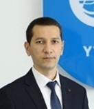
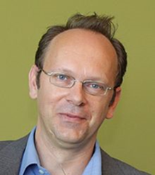
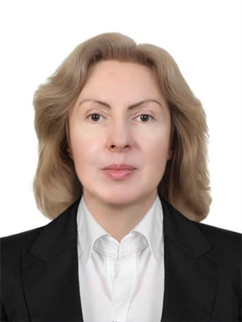
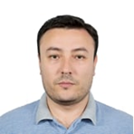
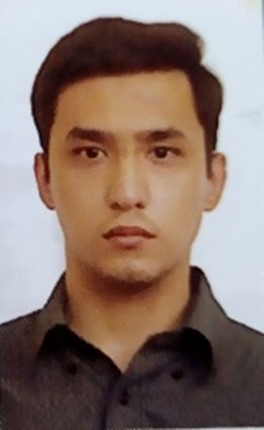
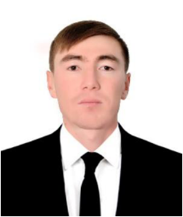
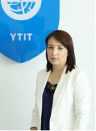

Руководитель проекта

Юсупов Жамбул Русланович
1981 г., DSc, Заведующий кафедрой, YTIT
Зарубежный партнер

Ehrhardt Matthias
1969 г., профессор, Bergische Universität Wuppertal
Основной исполнитель

Матрасулов Давронбек Урунович
1971 г., д.ф.-м.н. ТПУТ
Основной исполнитель

Карпова Ольга
1969 г., к.ф.-м.н., старший научный сотрудник, ТПУТ
Основной исполнитель

Юсупов Хамид
1982 г., PhD, доцент кафедры, ТГПУ
Основной исполнитель

Матрасулов Жасур
1995 г., преподаватель, YTIT
Основной исполнитель

Усанов Султон
1994 г., преподаватель, YTIT
Менеджер проекта

Исамова Г
Бухгалтер